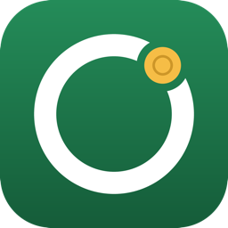

Privacy Policy
Orbo: Expense & Split Tracker · Last updated 21 November 2026 · iPhone and Android
What stays on your phone
Your transactions, budgets, categories, plans, circles and settings are saved only on your phone, in Orbo's own storage. Backups you export go wherever you choose to save them, such as Files, iCloud Drive or Google Drive. The Android app doesn't even have permission to use the internet, and Android's cloud backup is turned off for Orbo's data.
Microphone and speech
On iPhone, when you log by voice, speech is turned into text on your iPhone using Apple's on-device recognition. Audio is never recorded, stored or sent anywhere.
On Android, Orbo uses your phone's on-device speech recognition when it has one. Some phones don't; there, and only if you agree when Orbo asks, Android's own speech service (usually Google voice typing) turns your words into text, offline when your phone has the offline language pack and otherwise online under Google's privacy policy. Orbo itself never records, keeps or sends audio, and you can turn this off in Settings › Voice entry.
Circles (iPhone)
Circles sync directly between nearby iPhones over your local network, encrypted end to end. Only that circle's shared expenses and member names are exchanged. Nothing goes through the internet or any server, including ours.
Messages and Shortcuts (iPhone)
If you set up the optional SMS automation, Apple's Shortcuts app passes the message text to Orbo on your iPhone. Orbo reads the amount and merchant and doesn't keep or send the message.
Purchases
Subscriptions are processed by Apple on iPhone and by Google Play on Android. Orbo never sees your name, email or payment details. Apple's privacy policy or Google's privacy policy covers the purchase.
Deleting your data
In Orbo, Settings → Erase all data removes everything. Deleting the app also removes its data from your phone.
Children
Orbo isn't directed at children and collects no information from anyone.
Changes
If this policy changes, the new version will be posted here with a new date.
Contact
Questions: appdocklabs01@gmail.com